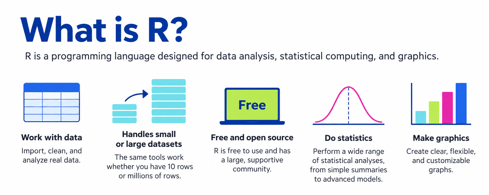
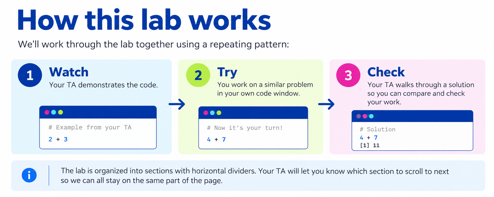
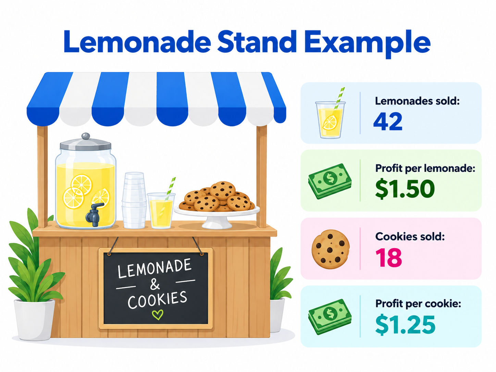
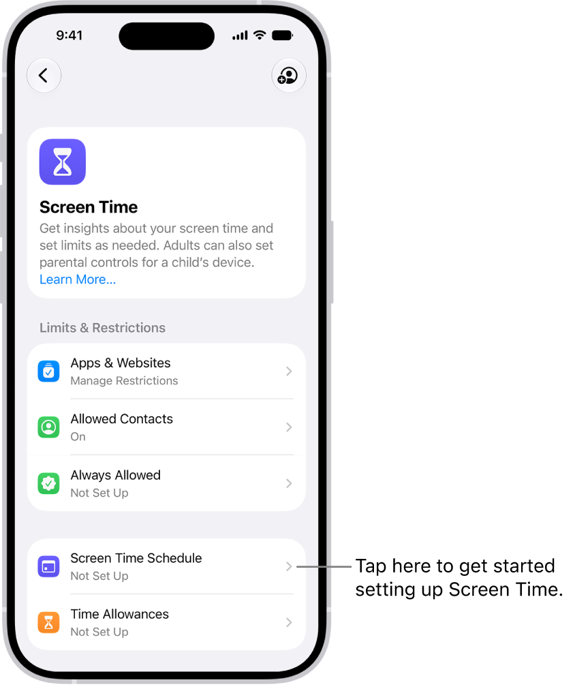
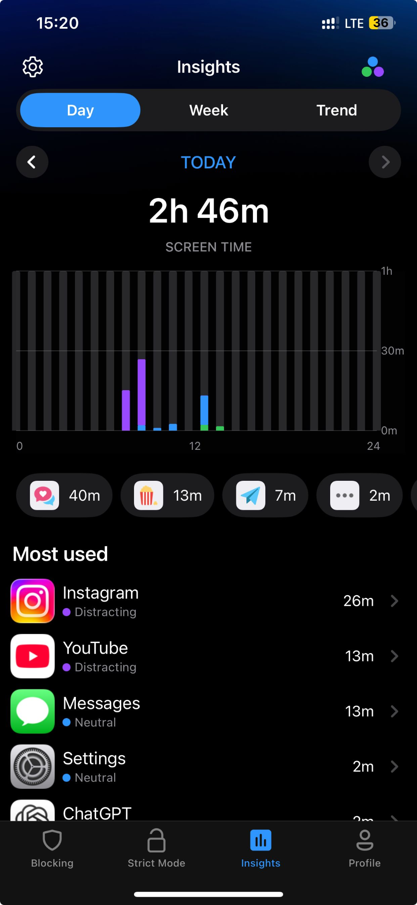
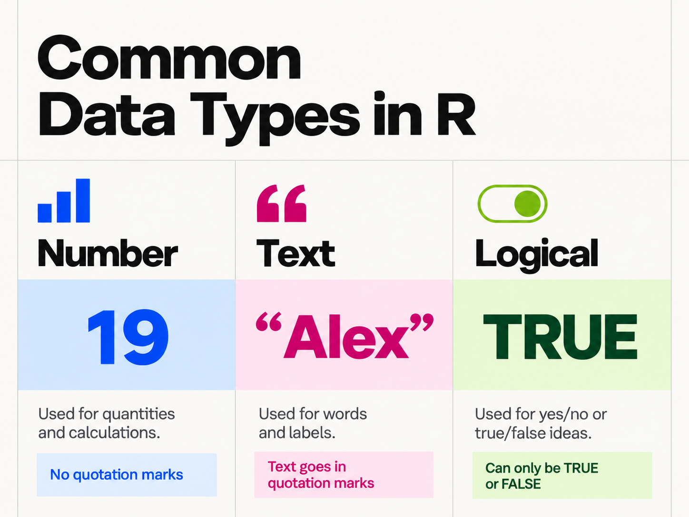
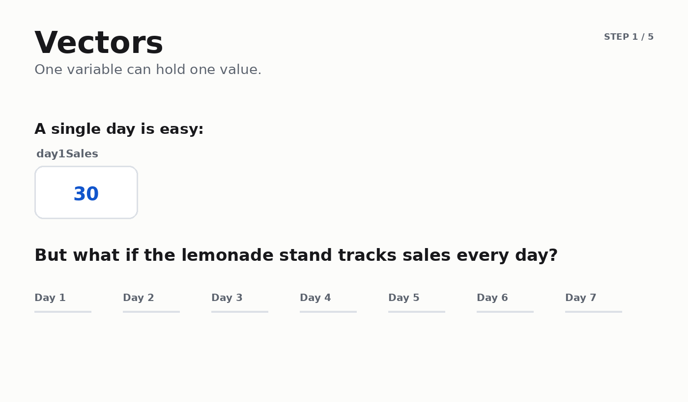
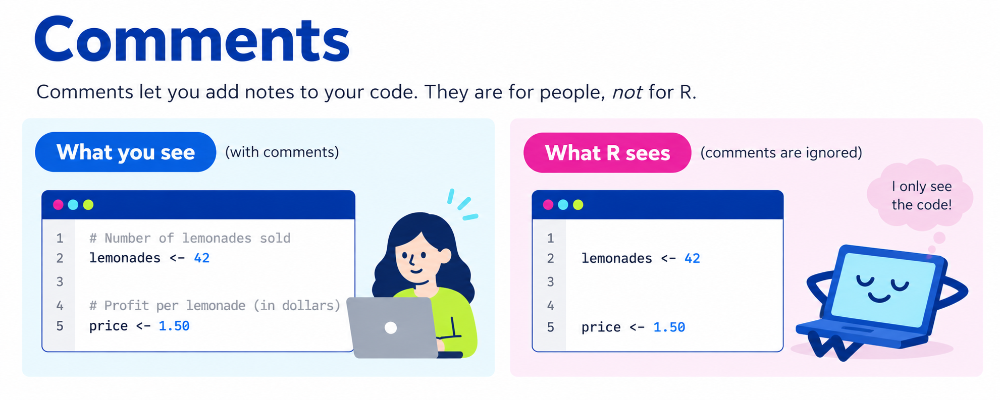

Learn the basic building blocks of R by running code directly in this page and then trying the same ideas yourself.


For each new idea, your TA will first demonstrate an example, then you will try a similar problem yourself, and then the class will check the solution together.
Your TA will run this example and talk through what each operator does.
R is still loading…
Now use R to solve these three problems:
R is still loading…
A variable is a container and label for information.
One important thing to notice:
assigning a value to a variable does not automatically display it.
If you want R to show you what is stored in a variable,
use print().

Now we can use variables to make a calculation easier to read. The lemonade stand sold 42 lemonades and 18 cookies. Profit is $1.50 per lemonade and $1.25 per cookie.
R is still loading…
First, find your average daily or weekly screen time. Then use that value to estimate how much screen time you would accumulate across a 16-week semester if your current habits stayed about the same.
Your phone may organize this information a little differently depending on its model and software version. If you cannot find the number quickly, ask your TA for help or use a sample value.


If you have a daily average, the semester estimate is:
If you have a weekly total, the semester estimate is:
R is still loading…
Different kinds of values let us do different things in R.

A value's data type tells R what kind of information it is — and that affects what R can do with it.
For example, R can print() numbers,
text, and logical values. But some operations
only make sense for certain types. We can do arithmetic
with numbers, but trying to add a number
to a person's name does not make sense.
TRUE or FALSE.
R can actually use them in arithmetic: when necessary,
TRUE acts like 1 and FALSE
acts like 0. That can be useful, but their
more important job is helping R make decisions.
Logical values are especially useful whenever we want to do something if a condition is true. For example:
In both cases, R first needs a question that can be
answered with TRUE or FALSE.
Your TA will create one value of each type and try a few operations with them.
R is still loading…
Now create your own number, text, and logical values. Then experiment with what R can do with each one.
R is still loading…
Store many values together in one variable.
You've already used functions earlier in the course.
A function takes one or more inputs, performs an algorithm,
and produces an output. R comes with many useful
pre-written functions for basic math and statistics,
including sum(), mean(),
median(), min(), max(),
and summary().

Once several values are stored in a vector, a function can work with the whole collection at once. Here is a week of lemonade sales.
R is still loading…
Now make two vectors about your own weekly schedule. Use the same class order in both vectors so the first value in each vector refers to the same class, the second value refers to the same class, and so on.
R is still loading…
You have now made two different semester-scale estimates: one for your phone screen time and one for the amount of time you spend in class + studying.
Use R to compare them. This time, the code is not filled in for you: use the comments in the code box as a guide. These are only estimates, so the goal is not to get a perfectly precise number. The goal is to use data and computation to get a sense of scale.
R is still loading…
Which estimate is higher? How close are they? Did the comparison surprise you? Why or why not?
Download a PDF containing the code and output from your Try activities plus your final reflection. You will only receive credit for the completed lab if you are present in lab and submit your work on Canvas.
Run each Try activity before downloading. The PDF will include your Try code, its output, and your final reflection.
Part 2: Adding comments to your code

Notice that lines beginning with
#explain the code, but they do not change the result.Write at least two calculations of your own. Add a comment above each one explaining what the calculation does.